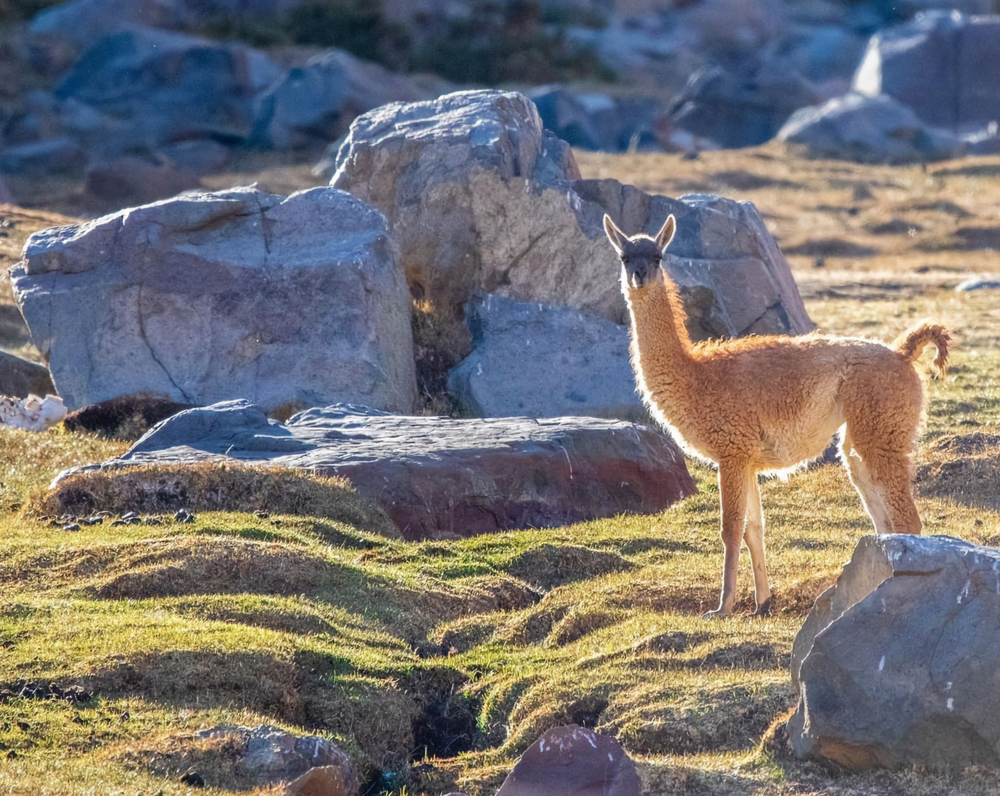

Guanaco: Lama guanicoe.
El mayor de los mamíferos terrestres que habita Chile presente en el Valle Alto de Chalinga.
El Guanaco pertenece a la familia Camelidae y posee una amplia distribución, desde el norte de Perú hasta la Isla de Tierra del Fuego e Isla Navarino en el extremo sur del país, con algunas pequeñas poblaciones en Bolivia y Paraguay, y mayores en Argentina (Redford & Eisenberg 1992). Sin embargo, la distribución actual de esta especie se considera como un remanente muy acotado en cuanto a la cantidad de individuos, ya que si consideramos la cantidad de guanacos en el Chile precolonial se estima que la especie habitaba prácticamente todo el territorio chileno, desde el extremo norte hasta Isla Navarino, desde la costa hasta la precordillera, solo excluyéndose en los bosques siempre verdes (Radecke 1978).